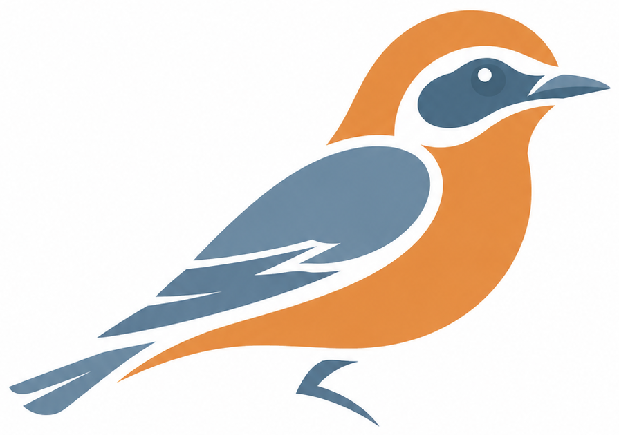

Move your AI agents anywhere.
Stop rebuilding them every time a vendor changes.
Wheatear converts agents and workflows between any of the major orchestration platforms, including Copilot Studio, watsonx Orchestrate, OpenAI, Vertex AI, Bedrock AgentCore, and n8n, in either direction. A platform switch becomes a migration, not a rewrite.
Modeled on the 0km the Northern Wheatear flies every year: the longest migration of any songbird, relative to body size.
Agent platform fragmentation is already a real cost, not a future one
Enterprises run production agents on more orchestrators than they admit to. Every M&A deal, vendor renegotiation, or platform sunset turns into a from-scratch rebuild, paid for in consulting hours, not software.
Vendor lock-in is structural
Dialog graphs, instruction-based agents, and visual flows aren't variants of each other. They're different paradigms. Leaving a platform means losing the logic, not just the syntax.
The forcing functions are now
Acquisitions inherit a different stack. Vendor relationships shift. Pricing and roadmaps change. None of this waits for a "someday" migration plan.
Migrations today are manual
Systems integrators rebuild agents by hand, topic by topic. It's slow, inconsistent, and the knowledge of how the original agent actually behaved walks out the door with whoever built it.
One pipeline. A clear line between what's deterministic and what needs AI.
Every migration runs through the same five stages. Mechanical work stays mechanical and auditable; behavioral translation gets AI assistance inside a schema-validated box.
Extract
Pull the source agent using the platform's own export mechanism: pac copilot clone, ADK export, or equivalent.
Normalize
Parse the raw export into Wheatear's canonical IR: one schema for agents, tools, triggers, knowledge, and connections.
DeterministicMap
Convert tool schemas, connections, credentials, and knowledge sources with explicit, testable field mappings.
DeterministicTranslate
Turn dialog graphs and conditional flows into agent instructions and tool-use guidance, where intent has to be understood, not just copied.
AI-assistedValidate
Schema-check the generated spec, run eval cases derived from the original flows, and route low-confidence output to a human reviewer.
Hybrid + review gateDeterministic where it must be correct. AI where it must understand intent.
An LLM should never freely reinterpret a credential or a tool schema. It should be the thing that reads a fifteen-branch dialog tree and figures out what the agent was actually trying to do.
Reproducible, auditable, no guessing
- Tool and function schema conversion
- Connection, auth, and credential references
- Knowledge base and environment variable mapping
- Target schema scaffolding and validation
Semantic translation, boxed in by validation
- Dialog graph → agent instructions
- Multi-topic bots → agent + collaborators
- Confidence scoring on ambiguous conversions
- Behavioral parity checks against the original flow
One canonical IR. Every platform reads and writes the same shape.
Every importer normalizes into this schema; every exporter reads from it. Adding a platform costs two connectors, not a translator for every pair already supported.
Mechanical fields, like tools, connections, and knowledge sources, map straight through. Behavioral fields are where the AI-assisted translation step does its work.
# normalized from Copilot Studio export spec_version: wheatear/v1 name: support_router source: copilot-studio instructions: | Route support requests to the right team based on issue category and customer tier. tools: - ref: lookup_ticket confidence: 0.97 knowledge: - ref: kb_support_docs review_required: false
Platform manifest
Every connector reads from and writes to the canonical IR above, so migration runs in either direction between any two platforms in the manifest below.
Pick any two platforms. Wheatear moves the agent between them.
Built around one canonical IR, every connector above works in either direction. Follow the project, file an issue with a migration scenario you care about, or contribute a connector.